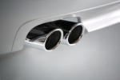

01Izpušni sistemi
Za servisiranje izpušnih sistemov skrbimo z učinkovito mrežo dobaviteljev in veliko lastno zalogo. Za voznike, ki želijo športne lonce: INOX lonci slovenskega proizvajalca De-Vito.
- izpušni lonci in cevi
- gibljive cevi
- katalizatorji
- kisikove sonde
- liti kolektorji
- športni INOX lonci